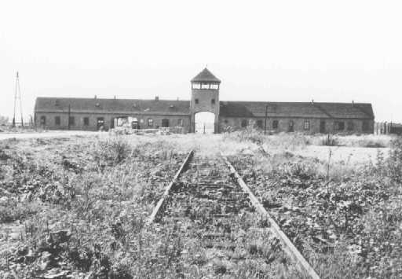
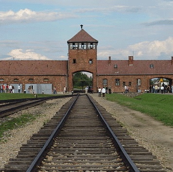
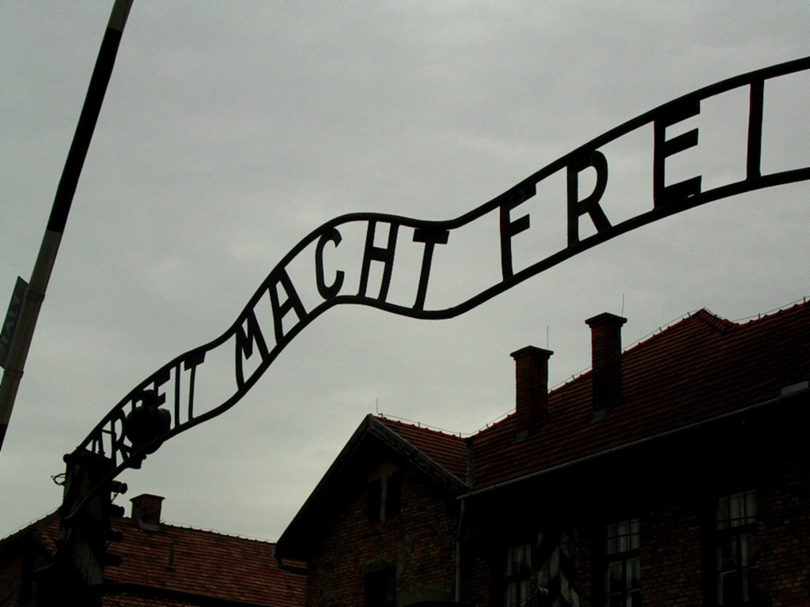
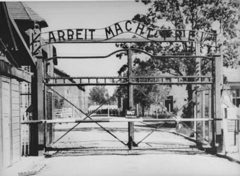

About Auschwitz
Auschwitz-Birkenau, or Auschwitz concentration camp was established near Oswiecim, Poland in 1940. It is a general term for the system of Nazi concentration and labor camps. The concentration camp could hold up to 150,000 victims at a time, thus, it was the largest of all the Nazi concentration camps.
Auschwitz concentration camp was famous not only because of its large area, but also the scaring numbers of death -- at least 2.1 million of people were killed within the camp, and most of the victims were Jews. The majority victims were killed in the gas chambers, others were suffering from disease from poor living condition, starving, forced labor, as well as medical experimenting.
(“History & Overview.”)
Time Line
20 May 1940 - Auschwitz I Camp Opens
Auschwitz I was built in 1940, it was the first camp established near Oswiecim. It was a barrack for Polish army before used by Nazis, the camp continuously expanded for holding more victims. Auschwitz I not only concentrates victims, it also serves other functions such as penalty. Gas chamber and crematorium (the place to burn bodies) were constructed in the camp.
8 October 1941 - Construction of Auschwitz II Begins
Construction of Auschwitz II, or Auschwitz-Birkenau, begins in Brzezinka. This camp has the largest population in any other camps, it's divided into nine separated sections. Gas chambers were built in the camp, planning to exterminate the Jew population in Europe.
October 1942 - Auschwitz III Camp Opens
Auschwitz III was established in Monowitz, it mostly functions as a labor camp doing synthetic rubber works. Prisoners selected for being labors are tattooed with numbers on their left arms in Auschwitz I.
27 January 1945 - Soviet Army Liberates Auschwitz Camp Complex
The Sovient army liberated Auschwitz camp prisoners, but only a few thousand prisoners were remained in the camp. Over 60,000 prisoners were killed shortly before the liberation on a death march. By statistics, about 1,500,000 victims were killed in Auschwitz, over 1,000,000 were Jews.
(“Auschwitz.”)




(Beit Lohamei Haghettaot; “Concentration Camps: Auschwitz-Birkenau.”; Instytut Pamieci Narodowej.)
About Dachau
Dachau was the first concentration established in Nazi Germany. Its main purpose is to concentrate a large number of people into a small area.
(“Concentration Camps in Nazi Germany.”)
The camp was located on the grounds of a factory near the town of Dachau, located in southern Germany. The camp was officially described as “the first concentration camp for political prisoners.”
(“History & Overview.”)
During the first year, the camp held about 4,800 prisoners. Initially, they were German Communists, Social Democrats, trade unionists, and other political opponents of Nazi. Over time, other groups were also interned at Dachau, such as Roma (Gypsies), homosexuals, as well as repeat criminal offenders.
(“Holocaust Encyclopedia.”)
Medical Experiments
German physicians performed medical experiments on prisoners in Dachau, including new medicine experiment, disease experiment, as well as extreme temperature experiment. These experiments causes death or physical pain of the prisoners.
“Hundreds of prisoners died or were permanently disabled as a result of the experiments.”
(“Holocaust Encyclopedia.”)